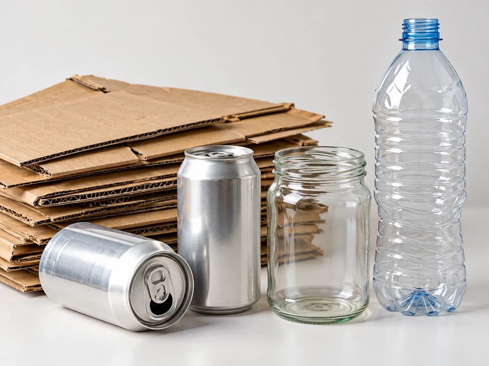
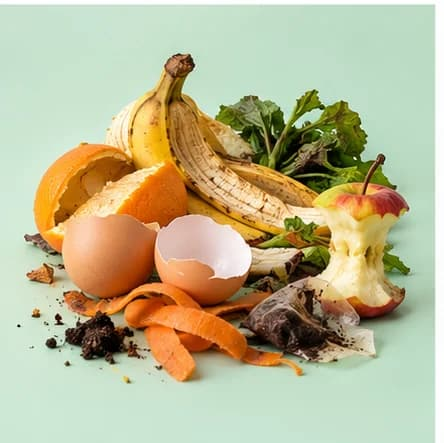
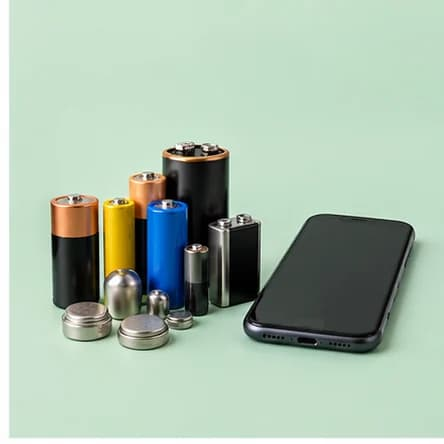

Tacho VerdeAprovechables
Materiales limpios y secos listos para reciclar.
- Botellas y envases plásticos
- Papel y cartón limpio
- Vidrio entero sin tapa
- Latas y Tetra Pak
Identificación
Diferencia cada tacho según la norma oficial del Perú.

Tacho VerdeMateriales limpios y secos listos para reciclar.

Tacho MarrónRestos biodegradables aptos para compost.

Tacho RojoRiesgo químico o eléctrico; requieren punto especial.
 Tacho Negro
Tacho Negro
Descartes comunes no reciclables.
Búscalo por nombre o sube una foto para identificarlo rápido.